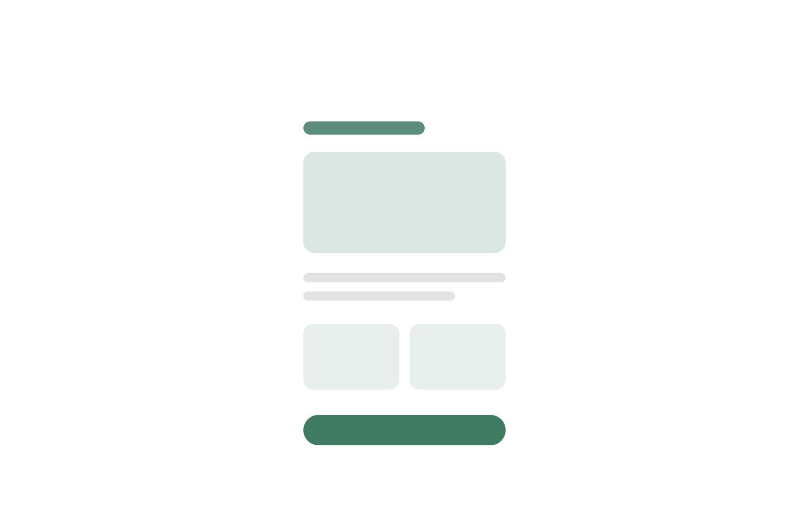
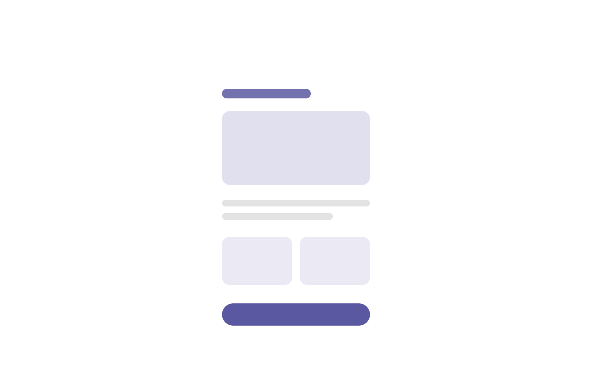

The problem
Describe the situation before you joined: who the users were, what was going wrong, and how you knew. Use one or two concrete numbers if you have them.
Research
What did you do to understand the problem? Interviews, analytics, usability tests, competitor review. Share the two or three insights that shaped the design.
- Insight one — what users actually struggled with
- Insight two — a surprising finding
- Insight three — a constraint from the business or tech side

Design process
Walk through the key decisions: the options you explored, why you chose one direction, and how you tested it. Show sketches, wireframes and iterations — reviewers love seeing how you think.
The solution
Present the final design and explain how each part answers the problem.

Results
- −40%Checkout time
- +18%Conversion
- 4.7★App store rating
What I learned
A short, honest reflection: what you’d do differently and what you’re taking into the next project.